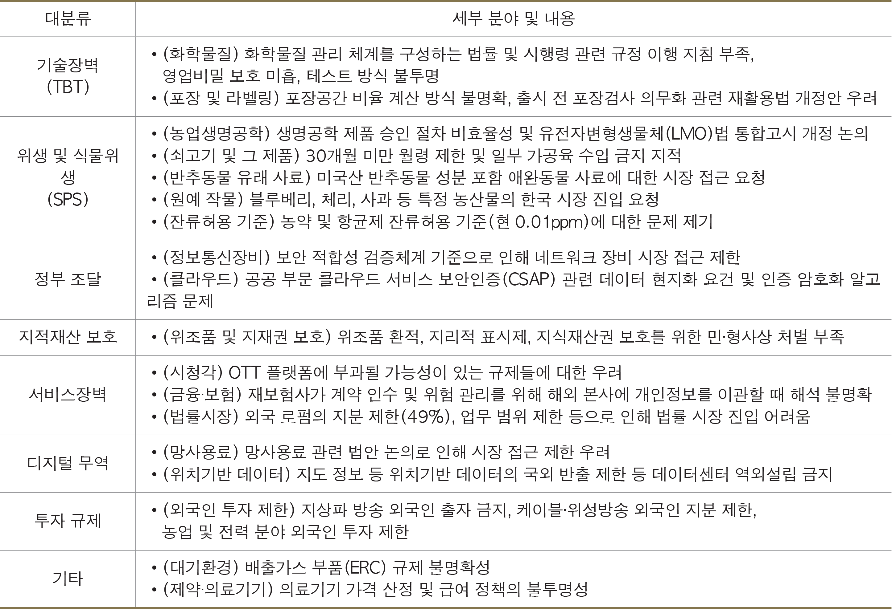

트럼프 정부 2.0 100일
트럼프 2기
정책 방향과 향후 전망
글 이태규 한국경제연구원 수석연구위원
1. 경제·무역
-불공정하고 불균형한 무역에 대한 조치로서 관세 인상을 추진하고 관세 징수를 위한 대외수입청(External Revenue Service)을 설립하며 기존 무역협정을 재검토한다.
-국제경제비상권한법(IEEPA)에 근거, 캐나다·멕시코·중국에 대해 각각 25%(에너지는 10%), 25%, 20%(10%+10%) 추가 관세를 부과한다.
-모든 철강 수입에 대해 25% 관세를 부과하고 기존의 철강에 대한 쿼터 및 면세 제도 등 대체 협정을 폐지한다. 알루미늄에 대해서도 마찬가지로 면제 조항 등의 예외 없이 25%(기존 10%) 관세를 부과한다.
-상호주의 무역 및 관세 정책을 추진해 교역상대국에 대해 비대칭적 관세를 해소하고 불공정 무역관행 및 비관세장벽의 개선을 추진한다.
-재무부의 환율 조작국 지정 기준을 완화하고 더 많은 국가를 환율 조작국 관찰 대상으로 포함한다.
2. 외교·안보
-‘미국 우선 외교 정책’(America First Foreign Policy)의 실현을 위해 UN을 비롯한 다자주의를 거부하며 유엔 인권이사회(UNHRC)와 팔레스타인 난민구호기구(UNRWA)에서 탈퇴하고 WHO도 탈퇴한다.
-국익 중심의 대외 정책을 추진하며 대외원조 기관인 미국국제개발처(USAID)를 전면 개편한다.
-미국의 지정학적 영향력 확대를 위한 신(新)팽창주의 전략을 추구하며 그린란드 매입 요구, 파나마 운하 소유권 주장, 가자지구 통제, 멕시코만 명칭 변경 등을 추진한다.
3. 산업·혁신
-AI 산업 리더십 강화를 위해 바이든 정부 규제 철폐, 대통령 직속 과학기술자문위원회(PCAST) 설립, 연방 국부펀드 설립, 빅테크 기업으로 구성된 스타게이트(Stargate) 프로젝트 등 전방위적 혁신 정책을 추진한다.
-암호화폐(Cryptocurrency)를 포함한 디지털 금융 기술에서 국제적 리더십을 강화하고 국가전략 자산으로서 암호화폐 비축을 검토한다.
4. 정부 개혁
-‘정부효율부’(DOGE: Department of Government Efficiency)를 통해 대대적인 정부 개혁(조직 슬림화, 예산 합리화, 생산성 극대화 등)을 추진한다.
-2026년 7월까지 연방 지출을 1조달러 절감하는 것을 목표로 연방 직원들에게 조기 퇴직 패키지를 제공하며 재택근무를 종료한다.
5. 환경·에너지
-국가 에너지 비상사태를 선포하고 미국의 에너지 우위(Energy Dominance)와 제조업 산업 경쟁력 강화를 위한 낮은 에너지 비용 달성을 위해 LNG 등 화석연료 개발(특히 알래스카 지역에서) 및 원전 개발을 촉진하고 관련 환경 규제를 철폐한다.
-바이든 정부의 기후·에너지 정책(IRA 등 그린뉴딜) 폐지, 풍력 발전 프로젝트 중단, 전기차 의무화 폐지, 그리고 UN 파리기후협약(Paris Agreement)에서 탈퇴한다.
6. 이민·사회
-국경 통제를 강화해 불법 이민자들의 유입을 막고 불법 체류자에 대해 형사집행을 강화하며 공공혜택 제공을 금지한다.
-DEI(Diversity, Equity, Inclusion) 등 사회적 혼란과 갈등을 유발하는 PC(Political Correctness) 이념을 교육, 정부, 스포츠, 군대 등 주요 사회 현장에서 제거하고 19세 미만 청소년들의 화학적·물리적 방법을 통한 성전환을 금지한다.
1월 20일 트럼프 대통령의 취임 이후 미국은 국내외 정책의 급격한 변화를 추진하고 있다. 취임 첫날 약 100건의 행정명령과 각서 등이 발표됐으며 이후 한 달간 서명된 행정명령 수는 트럼프 1.0 동기보다 약 5배 증가했다. 트럼프 대통령은 여러 대통령 조치로 ‘미국 우선’(America First) 공약을 신속히 이행하며 국정의 전 분야에서 파격적인 정책 어젠다를 제시하고 있다. 미국은 물론 세계 질서에까지 크나큰 반향이 퍼지고 있는 지금, 트럼프 2.0의 주요 분야 정책과 함께 한국 경제에 가장 큰 영향을 미치는 무역 정책에 대해 자세히 알아본다.
트럼프 2기 무역 정책의 영향
캐나다·멕시코·중국 등과는 달리 아직은 한국을 관세 전쟁의 직접적 대상으로 삼고 있지는 않지만 한국의 대미무역 흑자가 근래 크게 증가한 점을 감안하면 트럼프 정부의 표적에서 벗어나기는 어려울 것으로 보인다. ‘미국 우선 통상 정책’(America First Trade Policy) 대통령 각서(Memorandum)에서 명시한 통상 현안 관련 보고서 제출 시한 4월 1일 이후 한국에 대한 무역 정책이 보다 구체화될 것이다. 우선 지금까지 발표된 관세 정책의 대략적 영향은 다음과 같이 파악해 볼 수가 있다.
캐나다·멕시코·중국에 대한 관세
우선 USMCA의 혜택을 기대하고 캐나다·멕시코에 진출한 한국 기업은 직접적 타격을 받는다. 특히 멕시코에 진출한 한국 완성차 업체의 매출 거의 대부분은 미국 시장에서 발생하기 때문에 대멕시코 관세 인상의 영향은 매우 크다고 할 수 있다. 2023년 기준 멕시코에 진출한 한국 완성차 업체의 매출은 약 124억달러이며 이 금액의 상당 부분이 관세의 대상이 된다. 한편 이 세 국가에 대한 미국의 관세로 한국의 수출도 간접적 영향을 받는다. 이들 국가의 대미 수출 감소로 한국산 중간재 수요가 줄어드는 간접적 피해가 발생하는 것이다. 그 피해 정도는 이 세 국가의 대미 수출에 한국이 얼마나 기여(관여)하는지, 즉 GVC(Global Value Chain) 기여도에 의해 결정된다. 중국에 대한 한국의 GVC 기여도가 캐나다·멕시코에 대한 기여도를 압도하므로 중국으로부터의 간접 피해가 캐나다·멕시코로부터의 간접 피해보다 훨씬 클 것으로 예상된다.
상호 무역 및 관세
관세만 보면 현재 한국은 98%의 상품이 미국과 상호 간 무관세로 상호주의 관세에 영향을 받지 않을 전망이다. 하지만 트럼프의 어젠다는 ‘상호 무역’으로서 관세 외 다른 불공정한 무역 관행 및 제도를 내세워 상대국을 압박할 것으로 예상된다. 대표적으로 트럼프는 부가가치세(VAT)를 언급했다. 미국에는 없는 VAT는 미국 수출품에 일종의 추가 과세라는 논리이며 이를 이유로 상대국에 대해 향후 관세 인상 등 무역 조치를 할 수 있다. 미국은 VAT 대신 주에 따라 판매세(Sales Tax)를 부과하고 있지만 대부분 10% 미만이어서 20%가 넘는 유럽 등에 비하면 상당히 낮은 편이다.
한국의 VAT는 10%로 주요 선진국에 비해 낮은 편이기 때문에 VAT 그 자체로는 미국과 큰 마찰 요인이 되지 않을 것이다. 하지만 여타 비관세장벽은 미국이 문제 삼을 것으로 예상된다. 미 무역대표부(USTR)는 매년 무역장벽보고서(NTE)를 발표하는데 여기에 국가별 비관세장벽 리스트가 담긴다. 2024년 보고서에도 기술 및 서비스장벽, 지적재산보호 등 한국의 다양한 비관세장벽이 예시돼 있다. 따라서 미국은 상호 무역 차원에서 비관세장벽 철폐를 요구할 가능성이 크다. 이들 비관세장벽은 많은 경우 법령 개정이 필요하다. 우리나라의 정치 현실상 여야 합의에 따른 법령 개정이 신속히 이루어지지 않을 가능성이 크므로 향후 비관세장벽과 관련된 진통이 예상된다.
2024년 무역장벽보고서(한국 파트)
철강·알루미늄 관세
트럼프 정부는 3월 12일부로 철강과 알루미늄 및 파생 제품에 대해 기존 예외 및 대체 협정을 폐지하고 철강 25%일괄 관세, 알루미늄은 기존 10% 관세에서 25%로 인상했다. 한국의 철강과 알루미늄 수출 중 미국 비중은 2024년 기준 각각 13.1%, 10.5%를 차지한다. 특히 쿼터제 적용을 통해 관세를 면제받았던 철강 수출의 경우 그 부담이 더 커졌으며 알루미늄의 경우 15%p 추가 인상이지만 관세 면세 적용을 받았던 기업이 많아 사실상 25%p 인상의 부담을 안게 되는 경우도 많다. 단 관세 부과는 모든 국가에 적용되기 때문에 국가 간 상대적 경쟁력에 따라 미국 시장에서의 성과가 좌우될 전망이다. 철강의 경우 가격으로만 보면 한국의 톤당 평균 단가는 1,135달러로 전체 평균 1,310달러보다 낮아 중간 정도의 가격 경쟁력을 가지고 있다.(출처: 미국무역청 철강모니터링시스템) 전체 평균보다 높은 EU, 영국, 일본, 캐나다에 비해서는 관세 인상 이후에도 선전할 것으로 보인다.
향후 전망과 정책적 시사점
트럼프 2기 경제 정책의 핵심은 무역 정책이다. ‘America First’의 정신이 국제무역에서 가장 명확하게 구현되기 때문이다. 트럼프 2기 무역 정책의 종합적이며 구체적 윤곽은 불공정무역에 대한 조사가 완료되는 4월에 들어서야 드러날 전망이다. 캐나다·멕시코·중국에 대한 관세는 불이민, 마약 등 비경제적 요인을 이유로 부과되는 만큼 중국을 제외하고는 원인 해소를 위한 상대국의 노력과 협상에 따라 그리 오래 지속되지 않을 가능성이 크다. 특히 캐나다와 멕시코는 미국과 공급망으로 깊게 연계돼 있으므로 이들 두 국가에 대한 고율 관세는 그 피해가 미국에 직접적으로 돌아온다. 그러므로 업계 요청으로 지난 3월 5일 캐나다, 멕시코에 자동차에 대한 관세를 한 달간 유예한 것이다. 사실상 협상 시한을 연장한 것이라고 봐야 하고 전면적 관세 부과 시 미국이 받을 피해를 고려하면 어떤 식으로든 합의에 도달할 가능성이 크다.
4월부터는 본격적으로 유럽, 한국, 일본, 그리고 대미 수출 흑자국인 동남아 국가들을 대상으로 관세 부과가 추진될 것으로 보인다. 상호 무역의 관점에서 국가별로는 미국의 압박 정도가 다를 것이며 경제적·비경제적 요인을 종합해 미국의 관세 부과 수준이 결정될 것이다. 물론 4월에 발표될 미국의 무역 조치가 최종안은 아니다. 개별 국가와 협상을 통해 최종 버전은 변할 것인데 그 과정에서 국가별로는 협상에 따른 상당한 진통이 따를 수 있다. 한국의 경우 대미 무역 흑자 규모가 2020~2024년 5년간 지속적으로 증가해 2020년 대비 2025년 대미 흑자는 약 336% 증가했다. 따라서 주요 흑자 품목에 대한 관세 인상은 물론 한·미 FTA 재협상의 가능성도 매우 높아졌다.
향후 미국과의 통상협상은 우리의 새로운 통상전략의 수립과 연계해서 진행할 필요가 있다. 정도의 차이는 있겠으나 트럼프 2기 이후에도 미국의 보호주의적 경향은 지속될 것으로 보인다. 보호주의가 선거에서 표가 되기 때문이다. 따라서 보호주의를 피하기 위한 미국 내 투자도 필요하지만 동시에 다자간 무역체제 강화 노력도 필요하다. 그런 의미에서 CPTPP 가입도 적극적으로 추진할 필요가 있다. 다자간 무역체제 강화는 미국에 대한 레버리지로 작용해 미국과의 협상을 수월하게 만들 수도 있다. 한편 반도체, 배터리, 조선, 바이오 등 전략산업 분야에서 한·미 간 협력을 강화하고 이를 통해 양국 간 무역 갈등을 완화하는 전략적 접근이 필요하다. 미국으로서는 중국과의 경쟁에 있어 첨단전략 산업에서의 기술적 우위를 유지하는 것이 필수적이므로 동맹국과의 기술 협력이 매우 중요하다. 반도체, 배터리, 조선 등 상당수의 전략산업에서 글로벌 경쟁력을 가진 국가는 한국이 거의 유일하므로 이는 미국과의 통상 관계 설정에 있어 상당한 강점이다. 이들 전략산업에서 한·미 간 공급망을 탄탄히 연결한다면 한국에 대한 미국의 보호주의 공세는 상당히 무디어질 수 있다.
이 같은 통상전략이 효과를 가지려면 산업 경쟁력의 확보가 필수적이다. 다른 나라에 의해 ‘대체되지 않고’ 다른 나라를 ‘대체할 수 있는’ 경쟁력이 없으면 보호주의 시대에 살아남기 어렵고 미국과의 전략적 협력도 쉽지 않다. 따라서 산업 경쟁력 제고 및 유지를 위한 체계적 산업 정책이 그 어느 때보다 필요한 시점이다. 한때 주류경제학에서 백안시됐던 산업 정책은 보호주의 시대의 핵심 경제 정책으로 부상했다. 이제 산업 정책의 성과 여부에 따라 세계 시장에서 우리나라의 경제적 지위가 결정된다. 대부분의 주요국에서 공급망 재편, 전략산업 육성, AI 육성 등을 위해 대규모의 산업 정책이 추진 중이다. 하지만 많은 국가의 경험에서 보았듯이 산업 정책의 성공은 그리 쉬운 일이 아니다. 트럼프 2기 시대의 파고를 헤쳐나갈 수 있는 지혜로운 통상 전략과 산업 경쟁력의 확보를 위해 민·관이 지혜를 모을 때다.